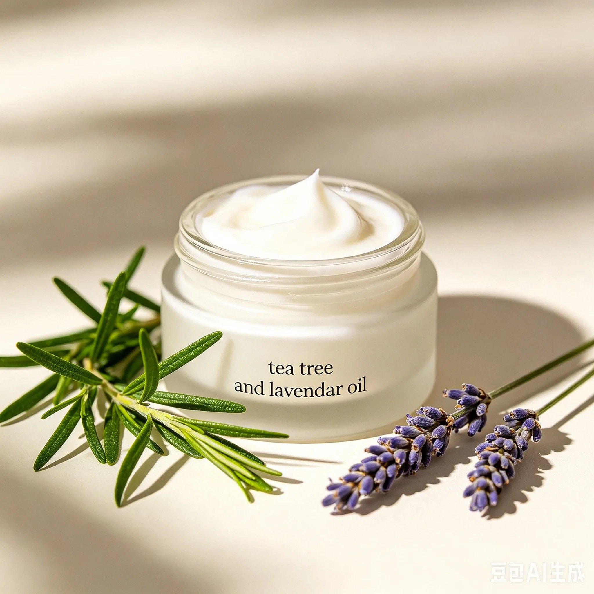
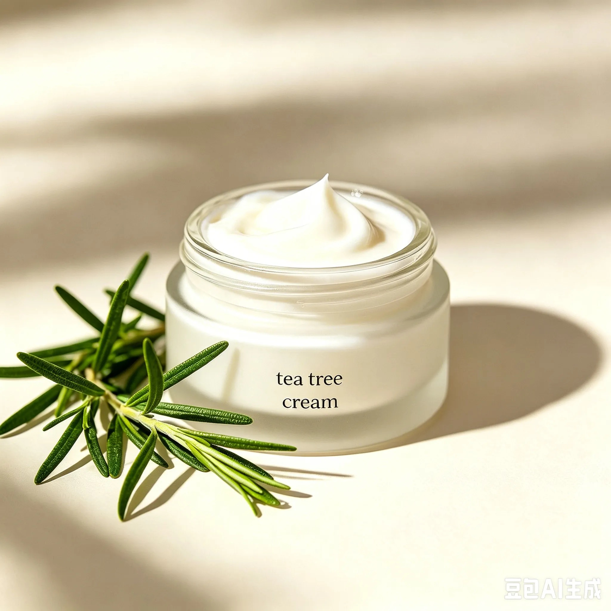
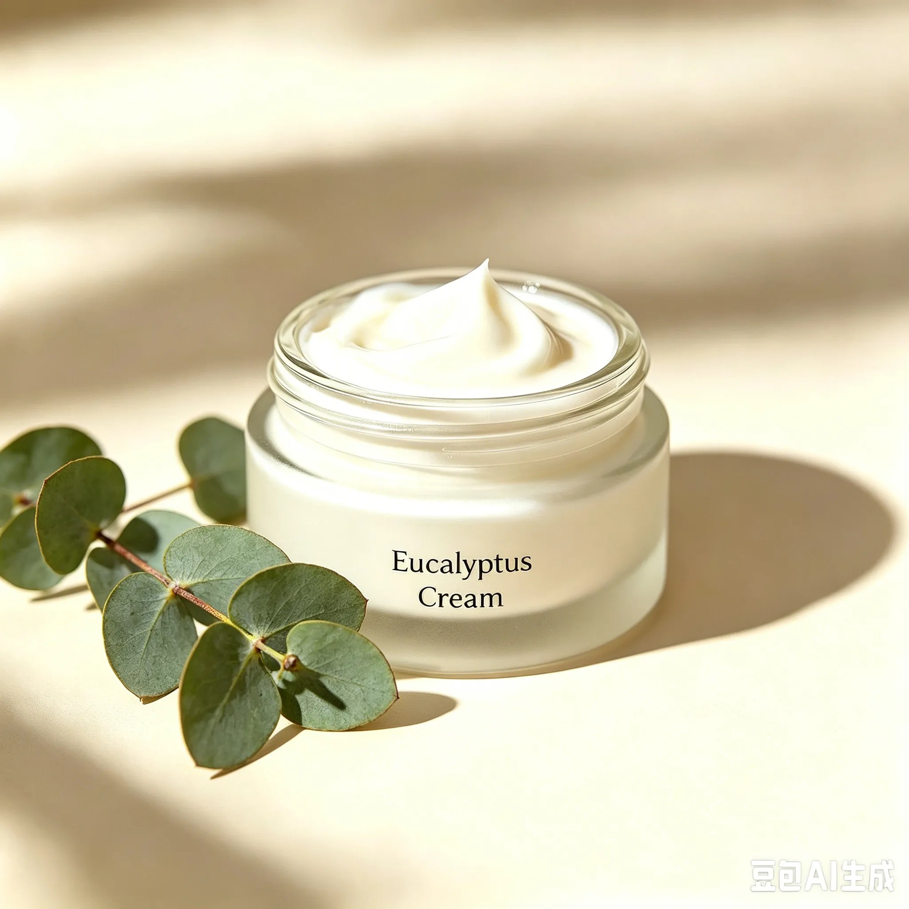
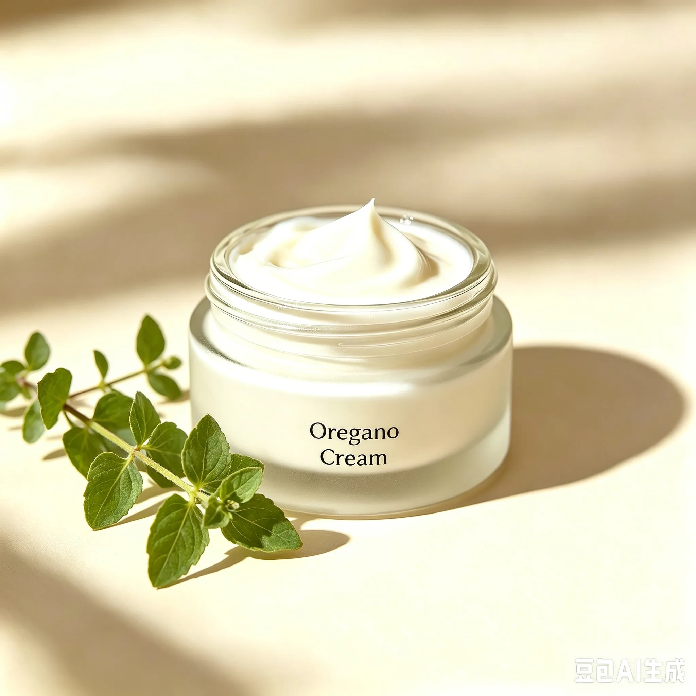
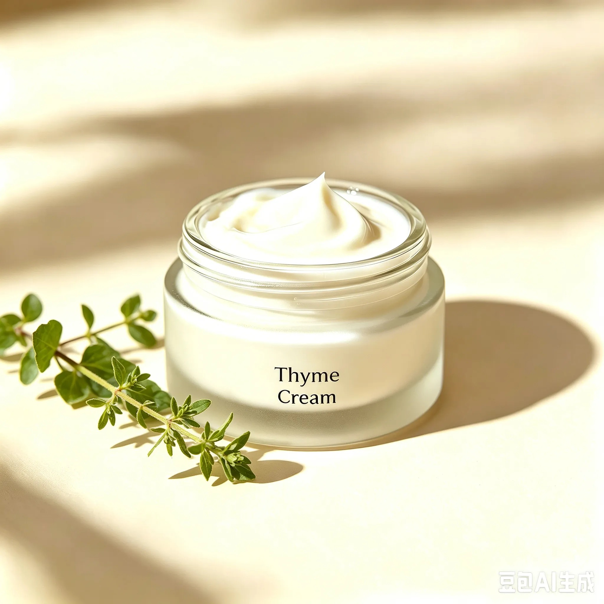
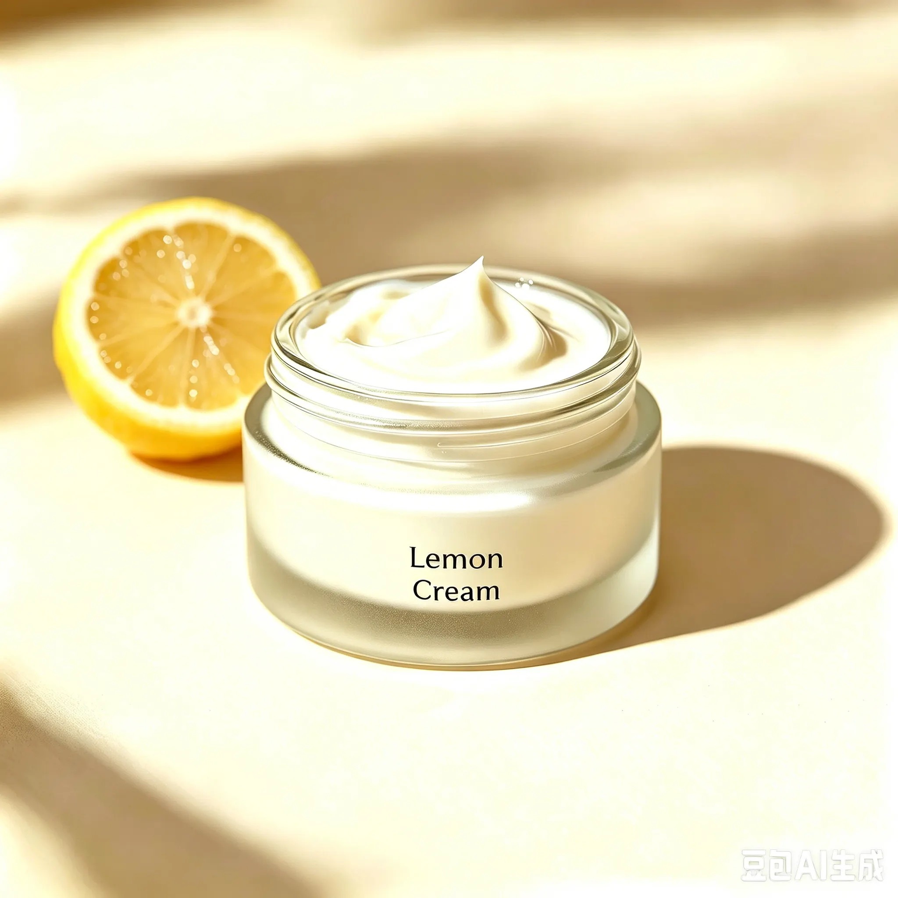

TODAY'S MINI QUEST
Hover for region names. Click a marker to open the collection.
Myths or Miracles?
Have you ever wondered why drinking honey can mitigate a sore throat?
Or why applying lavender essential oil may treat minor wounds?
In this map, we will explore whether ancient medical practices worldwide are scientifically effective...
...or just myths?
Now explore all regions on the interactive map
Museum of Ancient Healing
ancient medicine map
Select a map marker to open the ancient practices in this region and learn why it is effective, OR ineffective.
DAILY DISCOVERY ✦
Follow one clue from the ancient medicine atlas. Pick your hunch, then reveal the story.
TODAY'S MINI QUEST
Deep Dive
For thousands of years, healers around the world discovered that essential oils from plants may help treat acne.
Ancient Greece & the Arab World: Civilizations across the Mediterranean developed rich traditions of using aromatic plants to treat skin conditions. Lavender, citrus, myrtle, oregano, and thyme grew naturally in the region and became cornerstones of healing practices. These oils are believed to reduce inflammation, prevent infection, and help damaged skin heal.
Australian Aboriginal Traditions: They traditionally used tea tree oil for wound care, disinfection, and skin healing. Modern science now suggests it may be one of the most powerful natural acne fighters ever discovered.
What cause acnes?
Cause 1 of 4
The sebaceous glands may secrete too much oil, which can clog pores easily. The balance of fatty acids in sebum may also be disrupted.
What ancient people used?
It is believed to work by shrinking overactive sebaceous glands and reducing excess oil, making it a traditional choice for oil control.
People in Southern Europe and North Africa have traditionally used them to remove extra facial oil and help prevent clogged pores.
Suitable for: Oily skin, acne caused by excess sebum, whiteheads and blackheads.
 Paste image URL in src=""
Paste image URL in src=""
What cause acnes?
Cause 2 of 4
Old skin cells may fail to shed normally and pile up inside pores, potentially leading to blackheads and closed comedones.
What ancient people used?
People in Europe and West Asia have traditionally used these oils for facial cleansing. They are thought to soften dead skin and help clear out debris trapped in pores.
Traditionally believed to penetrate pores to help dissolve hardened skin plugs and improve comedones.
Suitable for: Closed comedones, open blackheads and enlarged pores.
:max_bytes(150000):strip_icc()/acne-001-bdc0402fa448416b85e95f1cbc5c9cea.JPG) Paste image URL in src=""
Paste image URL in src=""
What cause acnes?
Cause 3 of 4
Acne-causing bacteria such as Cutibacterium acnes, Staphylococcus epidermidis and Staphylococcus aureus may multiply rapidly inside pores and trigger inflamed, swollen pimples.
What ancient people used?
Originally used by local people to clean wounds, it is believed to effectively target acne-related bacteria. It is one of the most widely studied essential oils for acne.
Rich in thymol and carvacrol, they are thought to fight bacteria and may help break down bacterial biofilms, potentially useful for stubborn acne.
Suitable for: Red bumps, pus-filled pimples, recurring acne.
 Paste image URL in src=""
Paste image URL in src=""
What cause acnes?
Cause 4 of 4
Acne may lead to redness, swelling and soreness. Inflammation may also leave behind red marks and dark spots on the skin.
What ancient people used?
Widely used in Australia and the Mediterranean area. They are believed to help relieve swelling and support skin repair.
Traditionally thought to reduce inflammation. Its main ingredient D-limonene may help ease facial redness and support long-term skin health.
Suitable for: Red, inflamed acne, post-acne marks and redness.
 Paste image URL in src=""
Paste image URL in src=""
My Essential Oil Acne Creams
Each cream is designed to target a different acne problem — bacteria, oil, inflammation, or scarring. Formulated based on ancient healing traditions and modern scientific research.
Ancient healers discovered these plants. Modern science explored why they may work.

Paste image URL in src="""The most powerful combination."
Tea tree may kill acne bacteria effectively; lavender is believed to soothe inflammation and help prevent scars. Consider this if your acne is red, inflamed, or persistent.

Paste image URL in src="""Strong antibacterial."
Targets the bacteria that may cause acne, helps reduce pustules and papules, and supports infection prevention. May help clear pores and aid healing.

Paste image URL in src="""Powerful oil regulator."
May help shrink overactive sebaceous glands and reduce excess oil production. Also traditionally thought to help fade acne marks.

Paste image URL in src="""The heavy hitter."
Thought to fight resistant bacteria and help break down bacterial biofilms that may keep acne coming back. May reduce swelling and nodules.

Paste image URL in src="""Bacteria fighter."
Believed to have strong antimicrobial properties against acne bacteria. May help break down bacterial biofilms and reduce swelling and pain.

Paste image URL in src="""Broad-spectrum fighter."
May target multiple types of acne bacteria and help reduce inflammation. Also thought to help with facial redness.
STAY CURIOUS